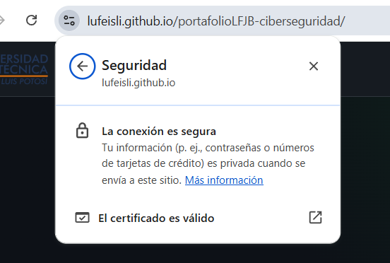

Desarrollo de la Práctica
Repositorio y Hosting
Se inicializó un repositorio público en GitHub configurando GitHub Pages en la rama main, forzando la seguridad SSL (HTTPS) para todas las conexiones entrantes.
Estructura y Estilos
Se desarrolló una interfaz basada en Grid y Flexbox, implementando un diseño Dark Mode responsivo mediante variables de CSS, ideal para visualización prolongada.
Implementación Técnica (Formulario)
Para cumplir con el requerimiento de respuesta automática sin backend, se implementó el enrutamiento mediante FormSubmit con campos ocultos para el autoresponder:
<!-- Conexión del formulario al servicio externo -->
<form action="https://formsubmit.co/lufeislijaramillo@gmail.com" method="POST">
<!-- Campos de entrada del usuario -->
<input type="text" name="name" placeholder="Nombre" required>
<input type="email" name="email" placeholder="Correo" required>
<!-- Configuración de seguridad y Autoresponder -->
<input type="hidden" name="_autoresponse" value="He recibido tu solicitud.">
<input type="hidden" name="_captcha" value="false">
<button type="submit">Enviar</button>
</form>Evidencias del Proceso

Fig 1: Configuración de GitHub Pages

Fig 2: Árbol de directorios y estilos CSS

Fig 3: Certificado HTTPS verificado en producción
Conclusión
La creación de este portafolio representa el establecimiento de una identidad digital profesional segura. Comprender el flujo de trabajo con Git, el despliegue cifrado (HTTPS) de sitios estáticos en GitHub Pages y la estructuración mediante HTML semántico, son habilidades fundamentales para documentar y presentar hallazgos de forma profesional en auditorías de seguridad.